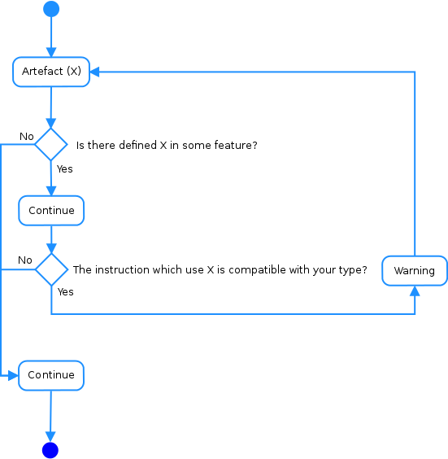
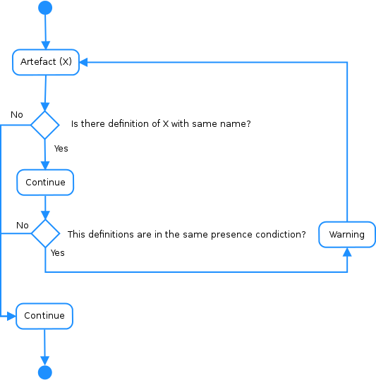

Bug #1
Bug #2
Bug #3
Bug #4
Bug #5



- http://git.kernel.org/cgit/linux/kernel/git/stable/linux-stable.git/commit/?id=f3d83e2415445e5b157bef404d38674e9e8de169 (bug1)
- http://git.kernel.org/cgit/linux/kernel/git/stable/linux-stable.git/commit/?id=c708c57e247775928b9a6bce7b4d8d14883bf39b (bug13)
- http://gcc.gnu.org/ml/gcc-patches/2014-01/msg01997.html (bug45)
- http://gcc.gnu.org/ml/gcc-patches/2009-12/msg00621.html (bug55)